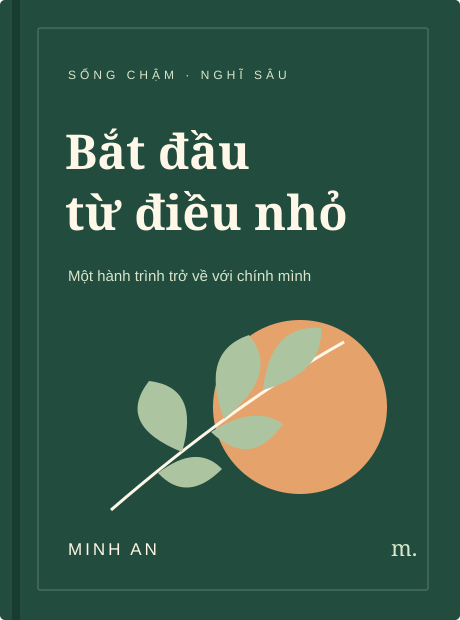

Câu chuyện gần gũi
Từ một buổi sáng yên tĩnh đến một ngày bận rộn, tìm thấy chính mình trong những tình huống đời thường.
MỘT CUỐN SÁCH · MỘT KHỞI ĐẦU MỚI
Không cần thay đổi cả cuộc đời trong một ngày. Chỉ cần một bước nhỏ, một trang sách, một khoảnh khắc dành cho chính mình.

01 / BOOK OVERVIEW
Một người bạn đồng hành cho những ngày bạn muốn sống chậm lại và đi xa hơn.
“Bắt đầu từ điều nhỏ” kể về cách những lựa chọn tưởng như bình thường có thể tạo nên một nhịp sống mới: tắt thông báo, ghi lại một suy nghĩ, dành mười phút cho điều mình yêu thích.
Cuốn sách được chia thành những chương ngắn, kết hợp câu chuyện gần gũi và bài tập thực hành để bạn đọc theo nhịp của mình.
03 / FEATURES
Không chỉ để đọc hết, mà để quay lại khi bạn cần.
Từ một buổi sáng yên tĩnh đến một ngày bận rộn, tìm thấy chính mình trong những tình huống đời thường.
Những gợi ý nhỏ để viết, quan sát và hành động. Bắt đầu ngay với thời gian và nguồn lực bạn đang có.
Mỗi chương là một điểm dừng. Đọc từ đầu hoặc chọn chủ đề phù hợp với điều bạn đang quan tâm.
04 / PRICES
Giá tham khảo cho ấn phẩm minh họa. Bạn có thể đọc thử trước khi lựa chọn.
NHẸ NHÀNG & TIỆN LỢI
79.000đ
CẦM TRÊN TAY, GIỮ TRONG LÒNG
149.000đ
MỘT MÓN QUÀ CÓ Ý NGHĨA
199.000đ
05 / DOWNLOAD
Tải chương đọc thử “Mười phút cho điều quan trọng” và thử một bước nhỏ cho ngày của bạn.
Tệp văn bản UTF-8 · Đọc trên máy tính và điện thoạiMiễn phí · Không cần đăng ký
06 / READER’S SAY
Nhận xét minh họa về trải nghiệm đọc sách.
“Mình thích cách mỗi chương kết thúc bằng một câu hỏi. Đọc xong, mình muốn dừng lại và viết một chút.”
“Ý tưởng dành mười phút cho việc quan trọng rất đơn giản, nhưng giúp mình bắt đầu thay vì trì hoãn.”
“Một cuốn sách có nhịp điệu chậm. Phù hợp để đọc vào cuối ngày và nghĩ lại về những điều mình đã làm.”